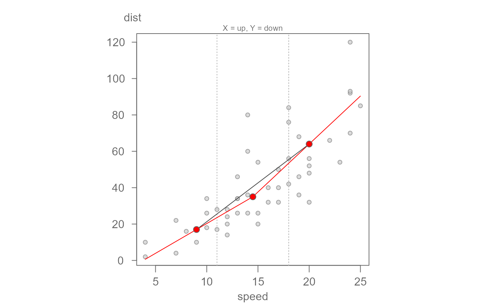

eda_3pt splits the data into 3 groups (whose summary
locations are defined by their respective medians), and two half slopes
linking the groups. The function will return a scatter plot showing the
half-slopes in red solid lines. The solid grey slope linking both tail-end
groups shows the desired shape for both half-slopes. The goal is to have the
two halve slopes line up as closely as possible to the solid grey slope via
re-expression techniques when seeking a linear relationship between both
variables.
The function will also return the half-slopes ratio hsrtio and the
direction of re-expression for both X and Y values on the ladder of powers.
Usage
eda_3pt(
dat,
x,
y,
px = 1,
py = 1,
tukey = TRUE,
axes = TRUE,
pch = 21,
equal = TRUE,
p.col = "grey50",
p.fill = "grey80",
size = 0.8,
alpha = 0.7,
xlab = NULL,
ylab = NULL,
dir = TRUE,
grey = 0.6,
...
)Arguments
- dat
Data frame
- x
Column name assigned the x axis
- y
Column name assigned the y axis
- px
Power transformation to apply to the x-variable
- py
Power transformation to apply to the y-variable
- tukey
Boolean determining if a Tukey transformation should be adopted (FALSE adopts a Box-Cox transformation)
- axes
Boolean determining if axes are to be drawn.
- pch
Point symbol type
- equal
Boolean determining if axes lengths should match (i.e. squate plot).
- p.col
Color for point symbol.
- p.fill
Point fill color passed to
bg(Only used forpchranging from 21-25).- size
Point size (0-1)
- alpha
Point transparency (0 = transparent, 1 = opaque). Only applicable if
rgb()is not used to define point colors.- xlab
X label for output plot
- ylab
Y label for output plot
- dir
Boolean indicating if suggested ladder of power direction should be displayed
- grey
Grey level to apply to plot elements (0 to 1 with 1 = black)
- ...
Other parameters passed to the graphics::plot function.
Value
Generates a plot and returns a list with the following named components:
hsrtio: The ratio between both slopes. A value close to one suggests that no transformation is needed.xmed: The x-coordinate values for the three summary points.ymed: The y-coordinate values for the three summary points.
References
Velleman, P. F., and D. C. Hoaglin. 1981. Applications, Basics and Computing of Exploratory Data Analysis. Boston: Duxbury Press.
D. C. Hoaglin, F. Mosteller, and J. W. Tukey. 1983. Understanding Robust and Exploratory Data Analysis. Wiley.
Tukey, John W. 1977. Exploratory Data Analysis. Addison-Wesley.
Examples
hsratio <- eda_3pt(cars, speed, dist)

hsratio <- eda_3pt(cars, speed, dist, py = 1/3, ylab=expression("Dist"^{1/3}))